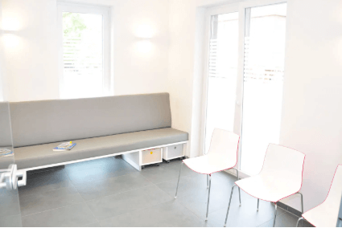
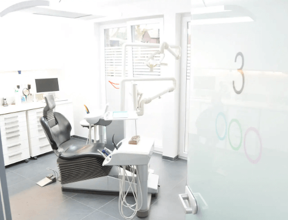
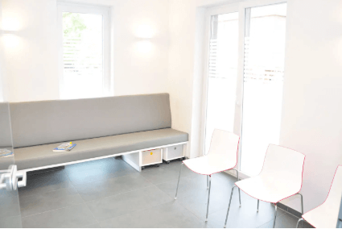
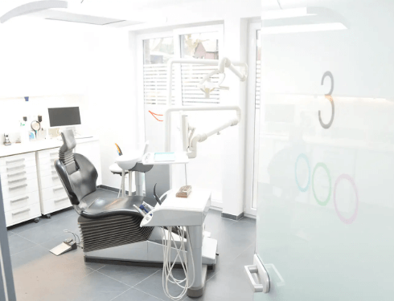

Stavros Avgerinos
Zahnarzt · Oberhausen
Zahnarzt · Oberhausen
 



„Sehr freundliches Team und moderne Praxis.“ ⭐⭐⭐⭐⭐
„Kaum Wartezeit, sehr kompetent.“ ⭐⭐⭐⭐⭐
➜ Alle Google Bewertungen ansehen📞 0208 602743
📍 Hasenstraße 17, 46119 Oberhausen